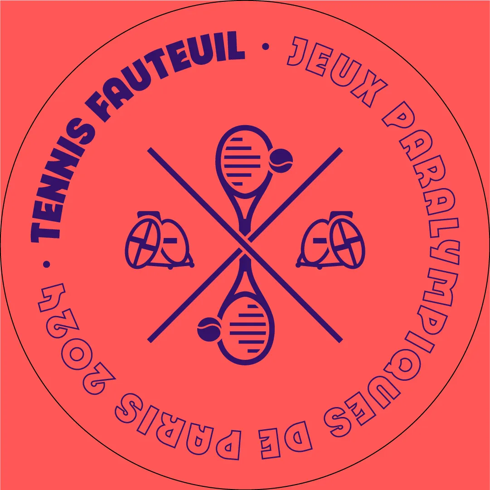
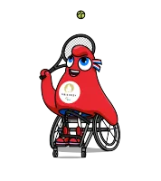
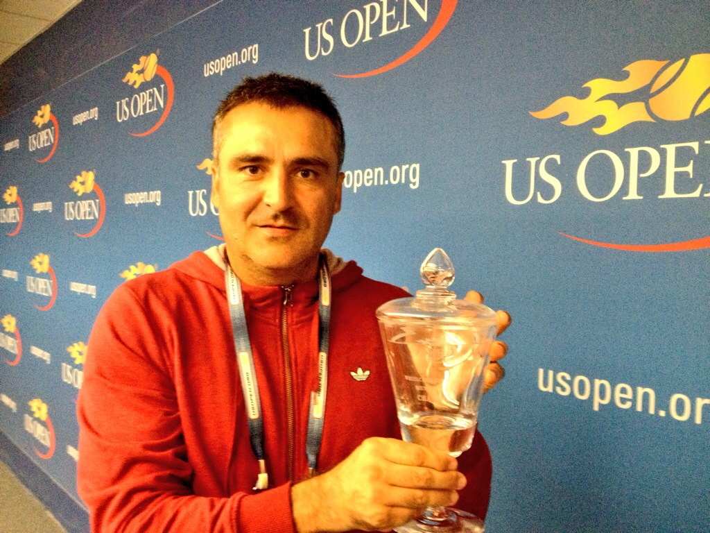

Tennis-fauteuil


Description:
Le tennis-fauteuil est un handisport dérivé du tennis, pratiqué depuis la fin des années 1970. Il se joue avec les mêmes règles que le tennis, avec seulement une adpation en lien avec le fauteuil roulant: la balle peut rebondir deux fois avant d'être renvoyée. Le deuxième rebond peut toucher l'extérieur du terrain. Il peut être joué en simple, double et patfois doubles mixtes.
Les athlètes sob«nt divisés en deux catégories: les "open" (pour ceux atteints au niveau des membres inférieurs) et les "quad" (pour ceux atteints aux membres supérieurs). Les athlètes quad jouent en mixte, peuvent attacher la raquette à la main et parfois utilisent des fauteuils électriques.
Dans cette vidéo on voit Novak Djokovic, le fameux athlète, qui tente de jouer tennis-fauteuil avec le champion de Grand Slam Dylan Alcott. On peut bien observer la règle des rois rebondissements et comme c'est un sport qui oblige à avoir beaucoup de force de bras.

Dates/Lieu
Les compétitions auront lieu du 30 août au 7 septmebre 2024 et se diputeron toutes en terre-batue dans le stade Roland-Garros, le lieu du fameux Grand Slam.
La compétition opposera: 48 hommes, 32 femmes et 16 athlètes quad mixtes.
La compétition comptera:
-7 rencontres (hommes/simples)
-6 rencontres (femmes/simples)
-6 rencontres (hommes/doubles)
-5 rencontres (femmes/doubles)
-5 rencontres (quad/simples)
-4 rencontres (quad/doubles mixtes)
Stéphane Houdet
Stéphane Houdet est un athlète français de tennis-fauteuil. Il est né à Saint-Nazare le 20 novembre 1970.
Il a 3 médailles d'or des Jeux paralympiques en doubles:
-2008 (Pékin)
-2016 (Rio de Janeiro)
-2020 (Tokyo)
Il a aussi gagné le Grand Slam Roland-Garros en simple (2012-2013) et le Us Open (2013 et 2017)
En doubles, so meilleur classement (1er) a été le 11 juin 2012.
Exemple de ce sport en France
Auteur
Gonçalo Freitas